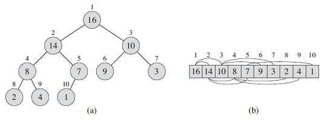
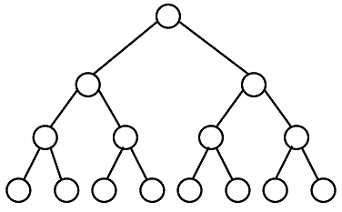
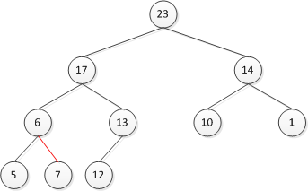

Summary
(binary) heap 자료구조는 거의 완전한 이진트리로 볼 수 있는 배열 객체이다. (그림 6.1)
- 실행 시간:O(n lg n)
- 정렬 방식:in-place ( 새로운 배열의 공간 할당 없이 배열 내에서 정렬되는 방식)
- 설계 기술
1. heap data structure
2. priority queue

그림 6.1(a) 이진 트리와 (b) 배열로 보여지는 max-heap
(max-heap) ith-node의 parent, left, right index 구하기
PARENT(i)
return ⌊i/2⌋
LEFT(i)
return 2i
RIGHT(i)
return 2i+1
bianry heap의 두 종류
- max-heaps property
A[PARENT(i)] ≥ A[i] - min-heaps property
A[PARENT(i)] ≤ A[i]
heapsort 알고리즘을 사용할 때, 대게 max-heap를 사용한다.
Exercises
6.1-1
What are the minimum and maximum numbers of elements in a heap of height h?
- maximum numbers : 2h+1-1
minimum numbers : 2h
6.1-2
Show that an n-element heap has height ⌊lg n⌋.
Since it is balanced binary tree the height of a heap is clearly O(lg n), but the problem asks for an exact answer.
The height is defined as the number of edges in the longest simple path from the root.

The number of nodes in a complete balanced binary tree of height h is 2h+1-1. Thus the height increases only when 2⌊lg n⌋, or in other words when lg n is an integer.
6.1-3
Show that in any subtree of a max-heap, the root of the subtree contains the largest value occurring anywhere in that subtree.
- This follows from the max-heap property.
If the ith element is the root of the subtree, then both its children would be less or equal to it. Since this properties holds for their children too and it is transitive, all of the descendents will be less or equal to the root, making it the largest value.
6.1-4
Where in a max-heap might the smallest element reside, assuming that all elements are distinct?
- In any of the leaves, that is, elements with index ⌊n/2⌋+1 (see exercise 6.1-7), that is, in the second half of the heap array.
6.1-5
Is an array that is in sorted order a min-heap?
- Yes, it is. For any index i, both LEFT(i) and RIGHT(i) are larger and thus the elements indexed by them are greater or equal to A[i] (because the array is sorted (sorted array example : 1,2,3,4,5,6 ...) ).
6.1-6
Is the array with values <23, 17, 14, 6, 13, 10, 1, 5, 7, 12> a max-heap?
- No. In the figure below, 7 is not less than or equal to the value of parent.

6.1-7
Show that, with the array representation for storing an n-element heap, the leaves are the nodes indexed by ⌊n/2⌋ + 1, ⌊n/2⌋ + 2, ... , n.
- Let's take the left child of the node indexed by ⌊n/2⌋+1.
LEFT(⌊n/2⌋+1) = 2⌊n/2⌋+2 > 2(n/2-1)+2 = n
Since the index of the left child is larger than the number of elements in the heap, the node doesn't have children and thus is a leaf. Same goes for all nodes with larger indices.
References